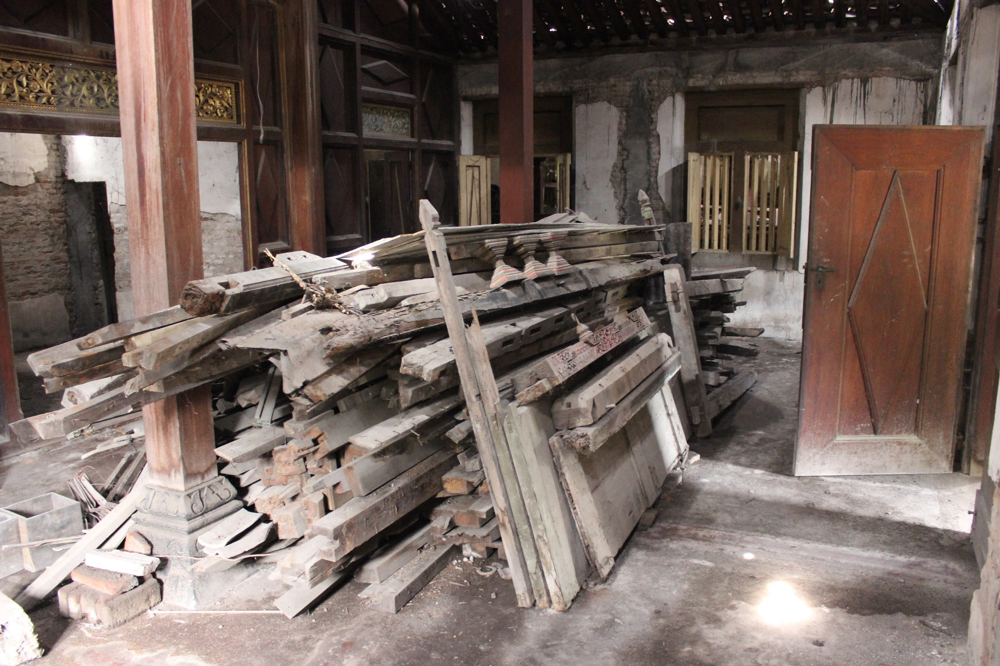

Dalam pengelolaan Cagar Budaya Rumah Antik/Kuno di Desa Jagalan banyak ditemui berbagai kendala sampai saat ini, diantaranya :
1. Rumah Kuno yang belum sempat direnovasi
Pasca Gempa Yogyakarta Tahun 2006, beberapa bangunan Joglo di Desa Jagalan yang perlu perhatian dan perbaikan, baik yang roboh ataupun mengalami kerusakan pada struktur kayu nya. Kondisi ini diakibatkan karena pemilik tidak memiliki biaya untuk renovasi dan juga semakin mahalnya bahan baku kayu untuk perbaikan. Sehingga sampai saat ini hanya dibiarkan ataupun hanya di”klem” menggunakan besi.
2. Banyak Bangunan/Rumah Kuno (arsitektur Joglo) yang dijual oleh pemiliknya
Semakin besarnya minat para pecinta barang antik/kuno saat ini sudaj banyak melirik arsitektur Joglo terutama di Desa Jagalan. Beberapa rumah Joglo dengan arsitektur kayu ini memiliki nilai jual yang cukup mahal, bahkan sampai ratusan juta sehingga mampu menggiurkan pemilik menjual bangunan tersebut.
3. Kurangnya pemanfaatan rumah antik/kuno sebgai penghasil pendapatan (income)
Belum adanya pemanfaatan rumah antik/kuno sebagai penghasil pendapatan pemiliknya (income) menjadi salah satu permasalahan klasik yang perlu perhatian. Kondisi ini mampu menjadikan menurunnya kecintaan dan rasa kepemilikan terhadap rumah kuno sehingga secara nyata pemilik bangunan akan cenderung menjual daripada menjaga eksistensinya.
Kondisi tersebut menjadi permasalahan yang sampai saat ini belum terselesaikan, walaupun berbagai macam organisasi cagar budaya dibentuk untuk mengatasi hal tersebut akan tetapi belum mampu sedikitpun mengani permasalahan tersebut. Hal ini dikarenakan organisasi yan dibentuk hanya menangani kawasan budaya milik pemerintah, sedangkan kepemilikan bangunan kuno tersebut adalah pribadi. Untuk itu pemerintah Desa Jagalan bersama 3 (tiga) Pilar yaitu : Kelompok Sadar Wisata Jagalan, Karang Taruna Jagalan, dan Jagawarga Jagalan berupaya membuat terobosan-terobosan untuk berusaha menjaga dan mengelola asset-aset tersebut, akan tetapi perlu dukungan dari instansi-instansi terkait dalam melaksanakan program kerja yang akan dilaksanakan.